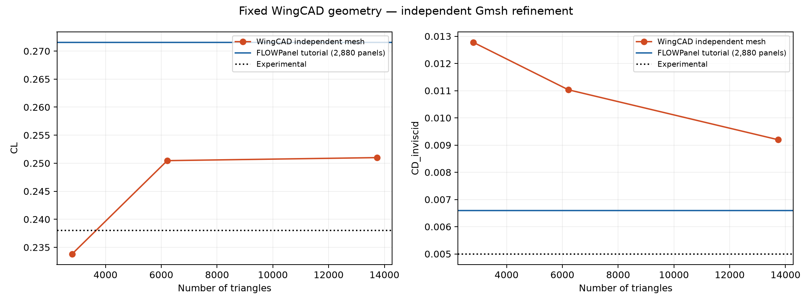
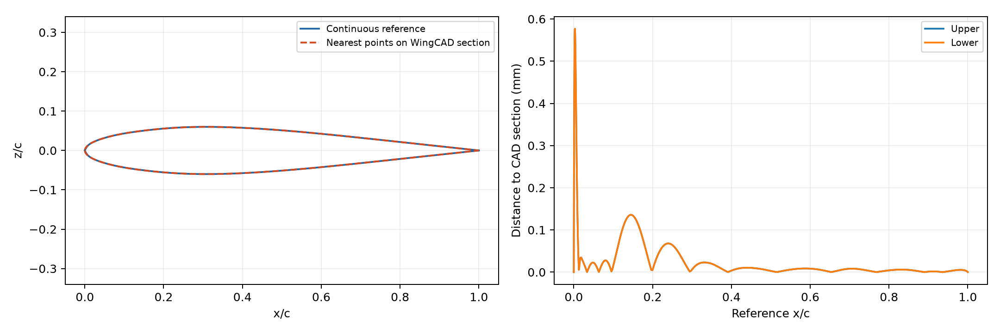
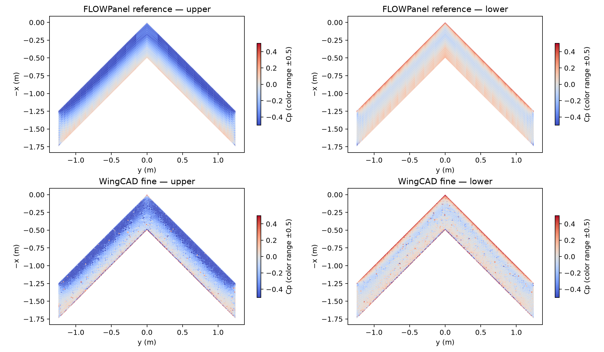
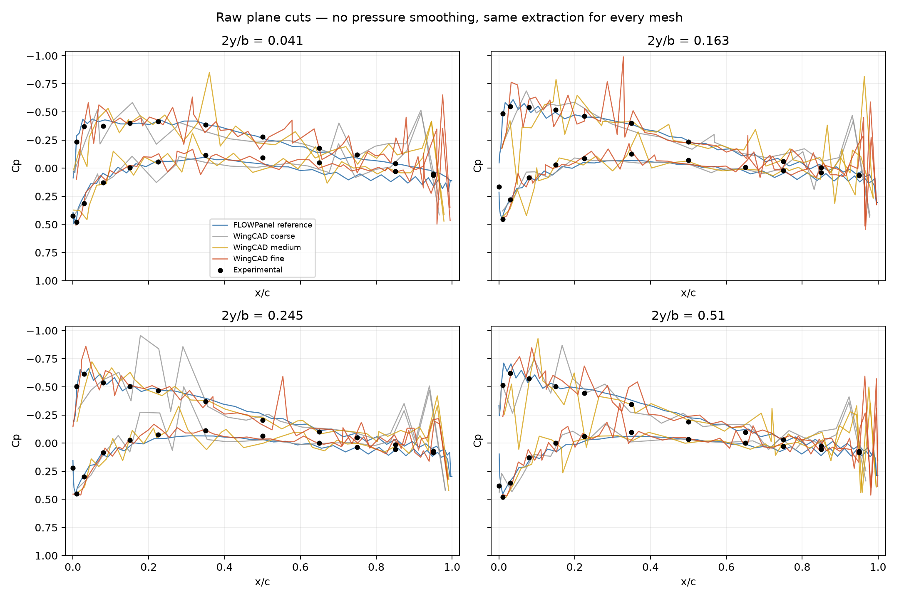
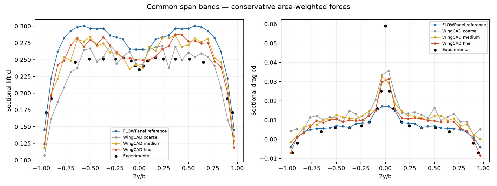

RAE101 · span 2.4892 m · chord 0.49784 m · sweep 45° · 30 m/s · 4.2° · 1.225 kg/m³.
WingCAD example 08, standard RAE101 interpolation. One fixed STEP for all three meshes. No reference mesh nodes or topology are used to generate these meshes. The matched example 09 is not used.
| Case | Panels | CL | CD inviscid |
|---|---|---|---|
| FLOWPanel reference | 2880 | 0.271561 | 0.006598 |
| WingCAD coarse | 2806 | 0.233826 | 0.012776 |
| WingCAD medium | 6214 | 0.250462 | 0.011033 |
| WingCAD fine | 13734 | 0.250999 | 0.009197 |
| Experimental | — | 0.238 | 0.005 |
Fine WingCAD versus tutorial: CL -7.57%, CD +39.39%. Convergence has not been established; these differences are not a geometry-only error estimate.
Successive changes on the same CAD:
Mesh size limits decrease by a factor of 1.5 at each step. CAD/source hashes match; mesh hashes differ. Tip caps are removed consistently; all remaining openings are at the tips. Parent meshes have positive signed volume and consistent panel orientation. All fields are finite, and integrated forces reproduce saved CL/CD. FLOWPanel reports a winding-number warning for the open surface; this warning is retained in each solver log, not treated as proof of an inverted mesh.
Independent geometry measurement: maximum one-way distance to the CAD section 0.5767 mm, RMS 0.1010 mm over 802 points at y = 622.3 mm. This is a sampled sectional distance, not a global Hausdorff bound and not an aerodynamic error estimate.
Both solvers use direct vortex-ring panels and the same rigid wake/conditions. The tutorial has two structured half-wing bodies; this adapter uses a connected unstructured mesh. The remaining difference includes CAD interpolation, triangulation, gradient reconstruction, body partition and finite resolution of both solutions. More refinement alone does not isolate these effects. No coefficients or nodes were tuned to improve agreement.
Pressure cuts use identical plane intersections for every case, without smoothing; they differ from the tutorial's nearest-column plotting procedure. Span forces are conservatively integrated into the same 30 bands. Colors are clipped to ±0.5, but numerical pressure data retain the full range.
Full audit JSON · Pressure CSV · Span loads CSV · Reference tutorial




